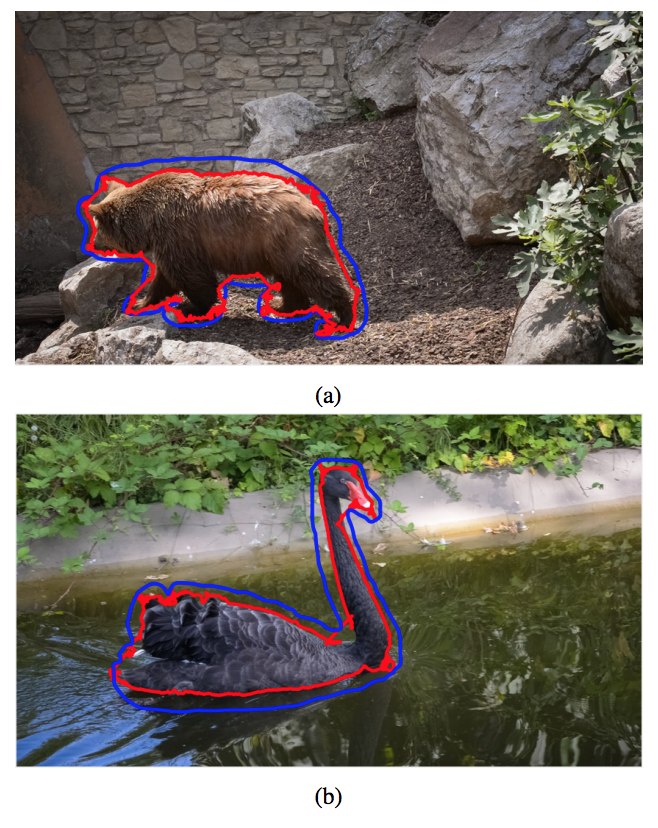
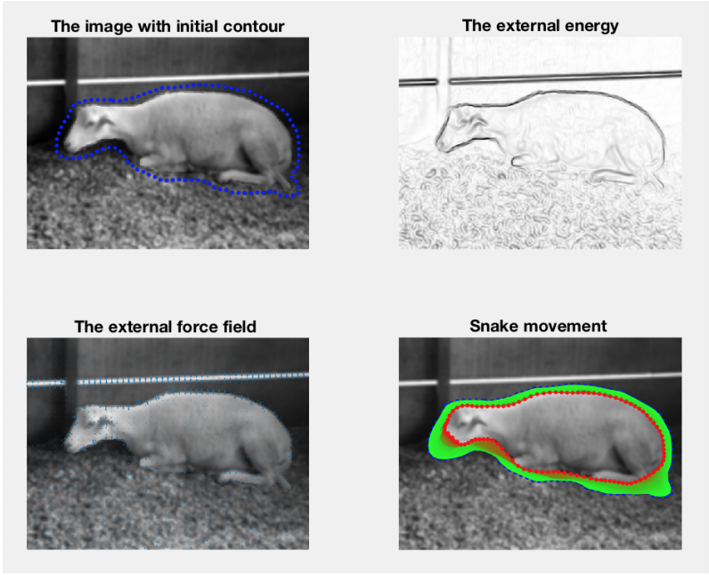
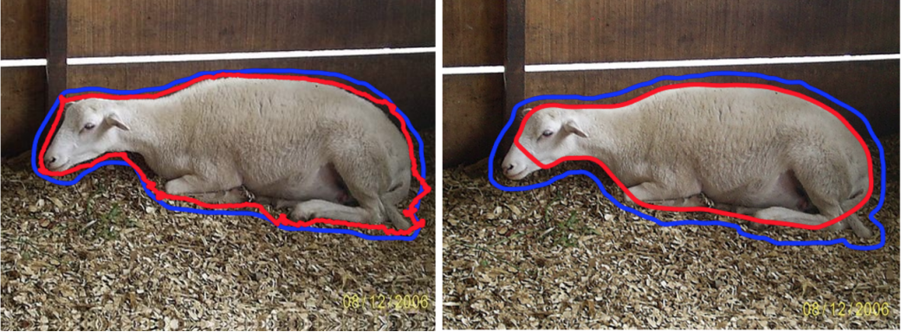

A comparative study between Deep Active Contours and Gradient Vector Flow Snakes for interactive boundary extraction
Project Member: Deepak Muralidharan
Abstract
In this project, we do a comparative study between the Deep Active Contour model and the classic Gradient vector flow (GVF) based Snake active contours for applications in interactive boundary extraction. As opposed to the GVF snakes contour model which is an energy minimization based approach, the Deep Active Contour model tries to learn the vector from the respective point on the evolving contour towards the closest point on the boundary of the object of interest. We train a convolutional neural network (CNN) model which learns to predict this direction vector using a deep patch based representation and then evolve the contour in this direction. We provide a visual and quantitative evaluation of both these methods on a few sample images from the densely annotated DAVIS segmentation dataset.
The project report can be found here.
Source code to the project can be found here.
Results overview
Performance of Deep Active Contour

Performance of GVF Snakes

Comparison of Deep Active Contours and GVF Snakes

Steps to run the source code for Deep Active Contour
1. Please make sure you are using MacOS (Mac) or Linux to run the algorithm. This code needs Tensorflow environment to run which can be setup only in macOS or Linux. This is not supported in Windows OS.
2. You will need Tensorflow and Python (Anaconda) to be installed in your system to run the inference part. For installing Tensorflow and Anaconda, please look at the procedure given in this page. Specifically, please have a look at the sections on "Anaconda Installation" and "Using Conda".
3. After installing Tensorflow, you can do a small check to verify if Tensorflow is working. For this, go to terminal and type "source activate tensorflow". This will activate the virtualenv you installed in the previous step. Now type "python". This will open the python environment. In this python environment, type "import tensorflow as tf". If you do not get any errors, that means you have successfully installed Tensorflow and can proceed to the next step.
4. Now navigate to the folder "source_code/deep_active_contours/"
5. Go to terminal and type "source activate tensorflow" to activate the Tensorflow virtualenv. Now type "bash run_project.sh" to run the main bash script which runs the algorithm.
6. Now, open MATLAB and run "save_results.m" to plot and save the final results. The results will be saved as "final_results.jpg".
Steps to run the code for GVF Snakes method
1. Please navigate to the folder "source_code/gvf_snakes/"
2. Open MATLAB and run "run_snakes.m" which runs the algorithm.
3. Now, run "save_results.m" to plot and save the final results. The results will be saved as "final_results.jpg".